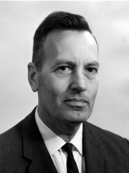
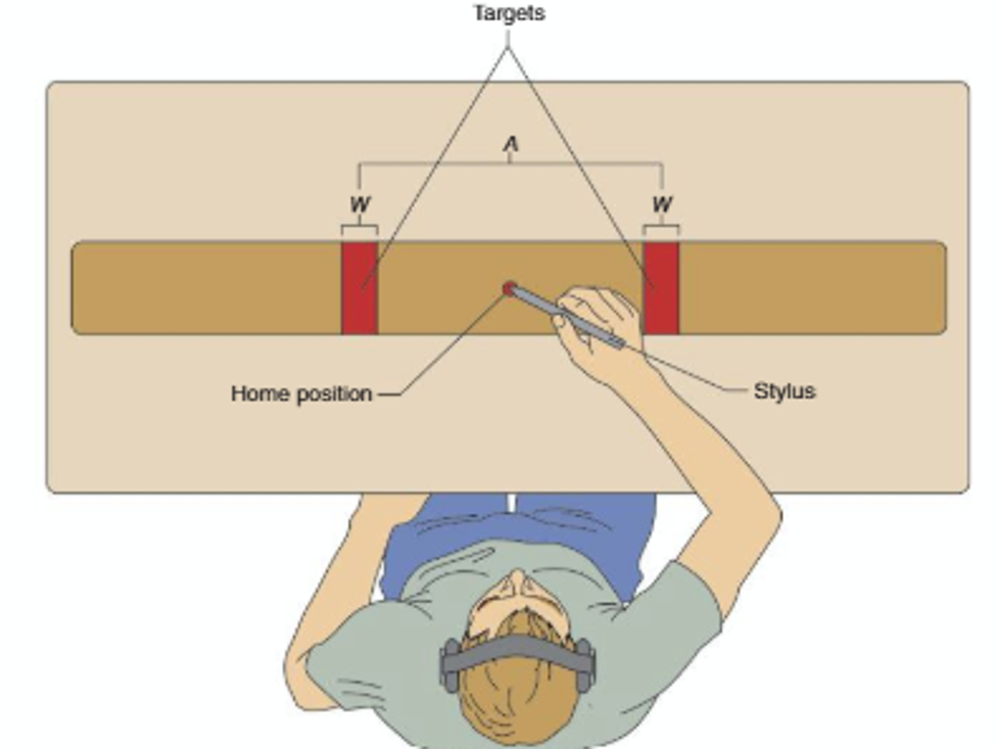
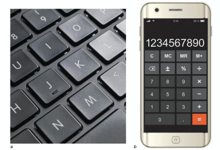
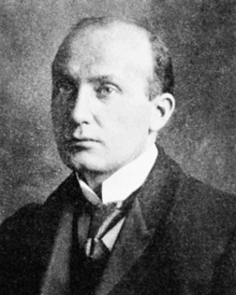

Fitts’ Law
The speed-accuracy trade-off for aiming is so regular that we can write it as an equation — a genuine law. This lesson is about where it came from, what it says, and how to read it from data you generate yourself.
These interactive lessons were built by Dr. Kuznetsov using AI tools, with extensive input from and review by the instructor, who is responsible for their content and accuracy.
Learning objectives
You should be able to:
- 1Describe how Fitts applied information theory to movement — the idea of the motor system as a channel with limited capacity.
- 2Describe the reciprocal tapping task and define amplitude (A) and target width (W).
- 3State Fitts’ Law — the index of difficulty (ID = log2(2A/W)) and MT = a + b·ID — and interpret the constants a and b.
- 4Interpret and analyze movement-time data as a function of ID, and predict which of two movements is more difficult.
Who was Paul Fitts?

A psychologist at Ohio State University whose name you already know: he is the Fitts of the Fitts & Posner three-stage model of skill acquisition we studied in the motor-learning unit. Fitts’ Law is his other major contribution.
After his PhD in psychology, Fitts joined the military, rising to Lieutenant Colonel and becoming the first director of the Psychology Branch of the Aerospace Medical Research Laboratory at Wright Field (now Wright-Patterson Air Force Base). In World War II, many aircraft were lost to pilot error — and Fitts set out to understand why.
He analyzed the errors pilots made reading displays and manipulating controls, and concluded that many losses could have been avoided through better cockpit design. His guiding insight: it is more important to design machines that match the operator’s capabilities than to train operators to use poorly designed machines. He went on to optimize the design of cockpits, instruments, radar scopes, gun sights, and navigation systems.
To design controls that fit human limits, Fitts had to first measure those limits — how fast and how accurately people can move to a target, and how that changes with task demands (how far the reach, how small the target). Make the task harder and movement changes in some way. Are those changes random, or systematic? Can we predict them? Later, at Ohio State, that question produced Fitts’ Law.
Biographical details from Paul M. Fitts, The Ohio State University. Additional background: Gray, R. (2018). 127 — The Legacy of Paul Fitts I. The Perception & Action Podcast.
Fitts’ two key innovations
While at Ohio State, Fitts published his seminal work — Fitts’ Law. Much simplified, it says that the time required to move a pointer (say, a mouse cursor) to a target is a function of the distance to the target divided by the size of the target. So the greater the distance and the smaller the target, the longer it takes to reach it.
His 1954 paper unified the field with two moves — one conceptual, one methodological. Flip each box for more.
Flip both boxes to see why it mattered.
A true quantitative “law” is rare in the human sciences, and rarer still in motor control. Fitts produced one — a relationship so reliable it still holds today, from tapping tasks to designing the buttons on your phone.
This is the paper that introduced these ideas — information theory applied to movement, and the reciprocal tapping task. It’s now one of the most-cited works in all of motor behavior, cited by ≈11,788 other papers (Google Scholar), and foundational seventy years on.
Fitts, P. M. (1954). The information capacity of the human motor system in controlling the amplitude of movement. Journal of Experimental Psychology, 47(6), 381–391.
Remember “information” and bits?
We met this idea back in the Action Preparation / Information Processing module, with the Hick-Hyman law: the more equally-likely choices you face, the more information you must resolve — and the longer your reaction time.
Information is measured in bits. One bit is one halving of the uncertainty: choosing between 2 options is 1 bit, among 4 is 2 bits, among 8 is 3 bits. Each doubling of the options adds just one bit — that relationship is log2.
In the tennis-return demo, 4 live zones → log2(4) = 2 bits of uncertainty — and ruling out zones dropped the bits and sped the return. The Hick-Hyman law even becomes a straight line when you plot RT against log2(N). Hold that thought — Fitts does the very same trick for movement.
A movement as information
Fitts’ insight: treat the motor system as a channel that transmits movement information — like a phone line carrying a signal. And like any channel, it has a fixed capacity: a top rate at which it can transmit that information. An aiming movement “carries” more information when it demands more precision relative to its size — the ratio of how far you move to how big the target is.
Fitts hypothesized that the channel’s capacity is fixed — so a movement that must carry more information would take proportionally more time. That is why the task pushes you to move as fast as you can: you’re measuring the channel at its limit. And notice it’s the ratio A/W that matters, not the absolute sizes.
The reciprocal tapping task
To measure the motor channel at its limit, Fitts used a simple, repeatable task: hold a stylus and tap back and forth between two target plates as fast as you can, without missing. Two things are varied:

Vary A and W, measure the average movement time (MT) per tap, and you can map difficulty against time. That mapping is the law: a relationship between movement amplitude (A), the desired precision (target size, W), and movement time (MT).
Fitts’ Law
The time required to move a pointer (say, a mouse cursor) to a target is a function of the distance to the target divided by the size of the target. Now let’s see how Fitts wrote that as an equation.
Fitts combined A and W into a single index of difficulty (ID), measured in bits — capturing the distance-to-precision ratio from the last screen:
Then he found that movement time rises in a straight line with ID:
Every time you double the distance OR halve the target size, you add one bit of difficulty — and movement time goes up by a fixed amount (b). Doubling distance and halving width cost the same, because only the ratio matters.
Tap it out
We’ll step you through five conditions, from easy to hard — the distance (A) and target size (W) are set for you each time. Just tap the two highlighted targets back and forth. Each condition adds a point, and your own MT-vs-ID line builds up.
Move as quickly as possible, while keeping target misses to a minimum. (This is exactly what Fitts told his participants — it’s how we push the motor channel to its limit.)
Tap either highlighted target to start Condition 1.
As ID goes up (longer A, smaller W), your MT goes up too — and the points fall close to a straight line. That line is Fitts’ Law, built from your own movements. Its slope is b, its intercept is a.
Note: this on-screen version uses mouse/touch taps, so your exact numbers differ from Fitts’ stylus data — but the shape of the relationship is the same.
Reading the line
The MT-vs-ID plot is where Fitts’ Law gets practical. Two numbers describe the whole relationship:
This is exactly what Fitts’ limited-capacity hypothesis predicts. If the motor system transmits information at a fixed rate (bits per second), then time = information ÷ rate — so movement time should be proportional to the information in the movement (the ID, in bits). A fixed capacity means a straight line; the slope (b) is just the inverse of that transmission rate.
A steeper slope = a slower system
The slope (b) is the most revealing part of the line: it is the extra time added for each one-bit increase in difficulty. Compare two systems on the same task and the steeper one is the slower one.
Schmidt and Lee (2025) note that these two lines “could be from two different people, or they could represent average group data from two different age groups, or they might represent data using two different computer input devices.” Whatever they are, the steeper slope denotes a slower processing system.
Comparing slopes is a way to compare motor efficiency: an older adult vs. a younger norm, a patient before vs. after rehab, a limb affected by stroke vs. the intact limb, or a mouse vs. a touchpad. A slope that drops after therapy is objective evidence the motor channel got faster.
Schmidt, R. A., & Lee, T. D. (2025). Motor Learning and Performance: From Principles to Application. Human Kinetics.
Where you’ll see it
Schmidt and Lee (2025) describe Fitts’ Law as “a specific type of speed–accuracy trade-off in which movement speed must be slowed to maintain a constant error rate.” Once you know it, you start to see it everywhere.
Fitts’ Law holds under a remarkable range of conditions — even tapping underwater or in outer space — across many groups (children, older adults, people with neurological impairments) and with many effectors (hand, foot, head-mounted pointers) (Schmidt and Lee, 2025; Plamondon & Alimi, 1997). That generality is a big part of why it earns the name law.
Here are three everyday examples — two from the textbook, and one from design.
Ask someone to fill a cup to the brim as fast as possible. Over the sink (a large tolerance for spills) they pour quickly. On their finest white linen (a tiny tolerance) they slow right down. Same cup, same coffee — a smaller tolerance for error forces a slower movement.
Imagine you’re offered $100 to thread a needle on your very first try — one chance, no do-overs. How deliberate would you be? It depends on the size of the needle’s eye. A large eye leaves a big tolerance — little information to process, so you can go fast. A small eye leaves almost none, so you’d move slowly, updating the thread’s position every millimeter. Smaller W → more information → more time.
Designers use the law deliberately: anything that must be reached fast and reliably is made larger or placed closer to where the hand starts — both lower the ID. A keyboard makes every key the same size, so a touch-typist’s most-hit keys are no easier to find than the rest. A calculator or phone breaks that tie on purpose — the big orange “=” key and the wide space bar are larger because they’re pressed most.

Examples and quotations from Lee, T. D., Motor Control in Everyday Actions (“Pouring Coffee,” “The Calculator”); Schmidt, R. A., & Lee, T. D. (2025), Motor Learning and Performance.
Which movement has the higher ID?
Both start the same distance away. Remember: smaller target = more precision = higher difficulty. Pick the harder one.
Where does Fitts’ Law come from?

We’ve seen that the law holds, and Fitts’ own answer — a fixed information capacity. But mechanically, what is the limb actually doing? To answer that, we return to an idea you met in the Vision unit: Woodworth’s two-component model.
Woodworth (1899) proposed that a rapid aimed movement has two components:
Initial impulse (open-loop)
A fast, pre-programmed launch that sends the limb roughly toward the target — no feedback used yet.
Current control / correction (closed-loop)
As the limb nears the target, sensory feedback fine-tunes the movement to home in.
Every explanation of Fitts’ Law lives inside this two-component picture. They disagree about one thing: which phase is responsible for the speed–accuracy trade-off — the open-loop launch, the closed-loop correction, or maybe both?
Woodworth, R. S. (1899). The accuracy of voluntary movement. Psychological Review Monograph Supplements, 3(3).
Two explanations, two phases
Which phase causes the trade-off? There are two camps, pointing to opposite components of the movement. Play each demo to see its claim in action.
Noisy initial impulse
As you move faster / farther, the pre-programmed motor command to the muscles becomes noisier — so the limb lands with more scatter and needs a bigger correction.
More corrections needed
The launch doesn’t really change. Instead, a smaller target needs more feedback-guided corrections to settle inside — and each one takes time.
Play both demos to reveal how the two camps are reconciled.
These were long treated as rivals. The optimized-submovement model (Meyer et al., 1988/1990) combines them: the launch is noisy (the impulse account) and that noise is exactly what forces the occasional correction (the feedback account). One framework, both phases — and it’s what unifies Fitts’ Law with Schmidt’s Law in Lesson 3.
No single model is universally accepted as the explanation. What is not in doubt is the empirical law itself — the MT–ID relationship is one of the most robust findings in motor behavior. The debate is about the mechanism underneath it.
Schmidt, R. A., Zelaznik, H., Hawkins, B., Frank, J. S., & Quinn, J. T. (1979). Motor-output variability. Psychological Review, 86(5), 415–451. · Crossman, E. R. F. W., & Goodeve, P. J. (1963/1983). Feedback control of hand-movement and Fitts’ law. Quarterly Journal of Experimental Psychology, 35A, 251–278. · Meyer, D. E., Abrams, R. A., Kornblum, S., Wright, C. E., & Smith, J. E. K. (1988). Optimality in human motor performance. Psychological Review, 95(3), 340–370.
Summary & the next step
- 1Explain how Fitts treated the motor system as an information channel with fixed capacity.
- 2Describe reciprocal tapping and define amplitude (A) and target width (W).
- 3State Fitts’ Law — ID = log2(2A/W), MT = a + b·ID — and interpret a and b.
- 4Read an MT-vs-ID line and judge which of two movements is more difficult.
Lesson 3 — Schmidt’s Law & Temporal Accuracy: Fitts’ Law describes aiming when you choose the speed. But for very fast, ballistic movements the relationship changes shape entirely — and a different law takes over.
Your passphrase for this lesson is FITTS-BITS. Enter it in the Canvas quiz to record completion.